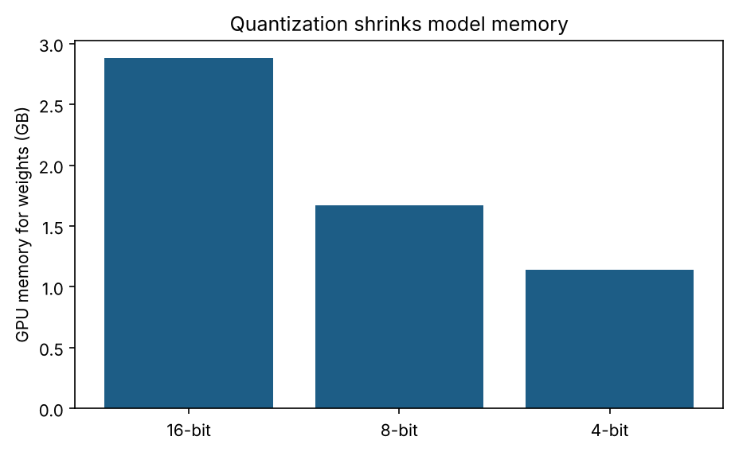
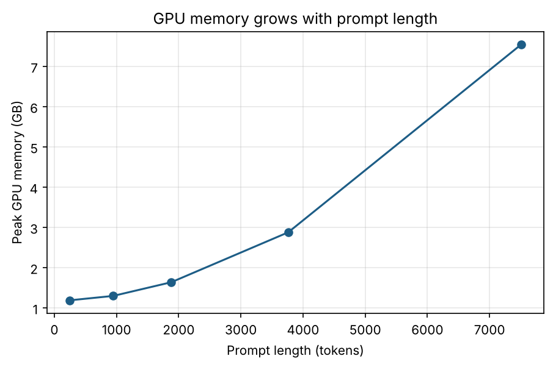
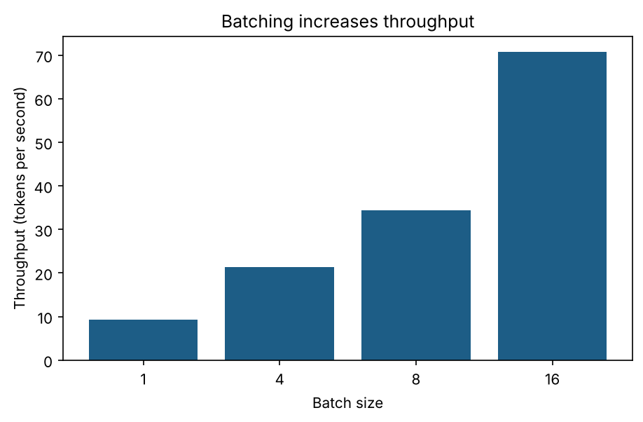
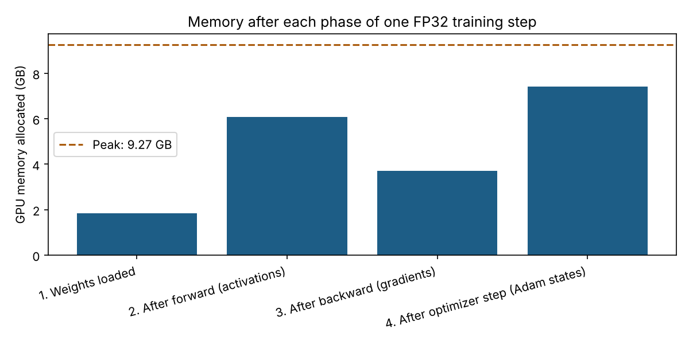

I measured how much GPU memory an LLM really needs. Here's what surprised me.
Everyone says the same things about running language models: "quantize it to save memory," "use LoRA to fine-tune cheaply." I believed all of it. But I realized I had never actually measured any of it myself.
So I ran my own experiments on a free NVIDIA T4 GPU in Google Colab, with small open models from the Qwen2.5 family. Before every experiment I predicted the memory from the number of parameters, then compared my prediction with what really happened. Some results matched the theory perfectly. Others surprised me.
Surprise 1: smaller was not faster
I loaded the same 1.5 billion parameter model in three precisions and asked it the same five questions.
| Precision | Weight memory | Speed | Answers correct |
|---|---|---|---|
| 16-bit | 2.88 GB | 19 tokens/sec | Yes |
| 8-bit | 1.67 GB | 1.3 tokens/sec | Yes |
| 4-bit | 1.14 GB | 3.5 tokens/sec | Yes |

The memory savings were exactly what you'd expect: 4-bit used about 60% less memory, and all three versions answered my test questions correctly. But 4-bit generated text about five times slower than 16-bit, and 8-bit was about fifteen times slower.
The reason is that compressed weights have to be converted back into 16-bit numbers during every calculation. That extra work only pays off when memory is the real problem. For a small model that already fits comfortably, it's just overhead. My takeaway: quantization saves memory, but it doesn't automatically make a model faster.
There was a second, smaller lesson. My simple prediction said the 8-bit model would need 1.43 GB, but it needed 1.67 GB. The reason is that not every layer gets compressed: the embedding layer, the big table that turns tokens into numbers, stays in 16-bit. In this model it's about 15% of all parameters. Once I included that in my calculation, the prediction was within a few percent.
Surprise 2: long prompts were the real memory risk
Next, I kept the model the same and made the prompt longer and longer.

A prompt of about 7,500 tokens needed 6.4 GB on top of a model whose weights took only 1.1 GB. And memory grew faster than the prompt: doubling the prompt from about 3,800 to 7,500 tokens almost quadrupled the extra memory.
At first I assumed this was all the KV cache, the model's memory of tokens it has already read. But the KV cache grows in a straight line with the prompt, and it's small for this model. Growth faster than that points to the temporary working memory needed while processing a long prompt, especially the attention calculation, which grows roughly with the square of the length. That's why techniques like FlashAttention, which avoid storing huge attention tables, matter so much for long contexts.
Surprise 3: batching was the best optimization

Sending 16 prompts at once instead of one at a time raised throughput from 9.3 to 70.8 tokens per second, about 7.6 times more, while memory went up by only about 8%. A GPU is built to do many calculations in parallel, so processing one request at a time leaves most of it idle. This is the main idea behind production inference servers.
Training: the weights are only a small part
The second half of the project looked at training. I ran one training step on a 494 million parameter model and measured the memory after each phase.

In full 32-bit training with the Adam optimizer, theory says every parameter costs about 16 bytes: 4 for the weight, 4 for its gradient, and 8 for Adam's two running averages. My measurements matched almost exactly:
| Part | Predicted | Measured |
|---|---|---|
| Weights | 1.84 GB | 1.84 GB |
| Gradients | 1.84 GB | 1.87 GB |
| Adam optimizer states | 3.68 GB | 3.71 GB |
What the simple formula leaves out is activations, the intermediate results the model saves during the forward pass so it can compute gradients afterwards. They added 4.2 GB, more than twice the size of the weights, for only about a thousand tokens. The step peaked at 9.27 GB, which means the weights were only about a fifth of the memory needed for training.
That one chart explains why fine-tuning even a small model can run out of memory on a GPU where running it is easy, and why techniques like 8-bit optimizers, gradient checkpointing and LoRA exist.
What I'd do in practice
- For a small model that fits: keep it in 16-bit and use batching. That gave the best speed by far.
- For a model that doesn't fit: that's when quantization earns its place.
- Always limit prompt length in production, because long prompts were the biggest memory risk.
- For fine-tuning: plan for several times the memory of the weights, or use LoRA and QLoRA to avoid most of it.
What I learned about learning
The most valuable habit from this project was predicting before measuring. When the prediction matched, I knew I understood the system. When it didn't, like the embedding layer or the attention memory, that gap was exactly where I learned something new.
All the notebooks, results and charts are on GitHub, and you can run everything yourself for free in Google Colab: llm-gpu-memory.
If you've measured GPU memory on other hardware, I'd love to compare notes. Feel free to reach out.